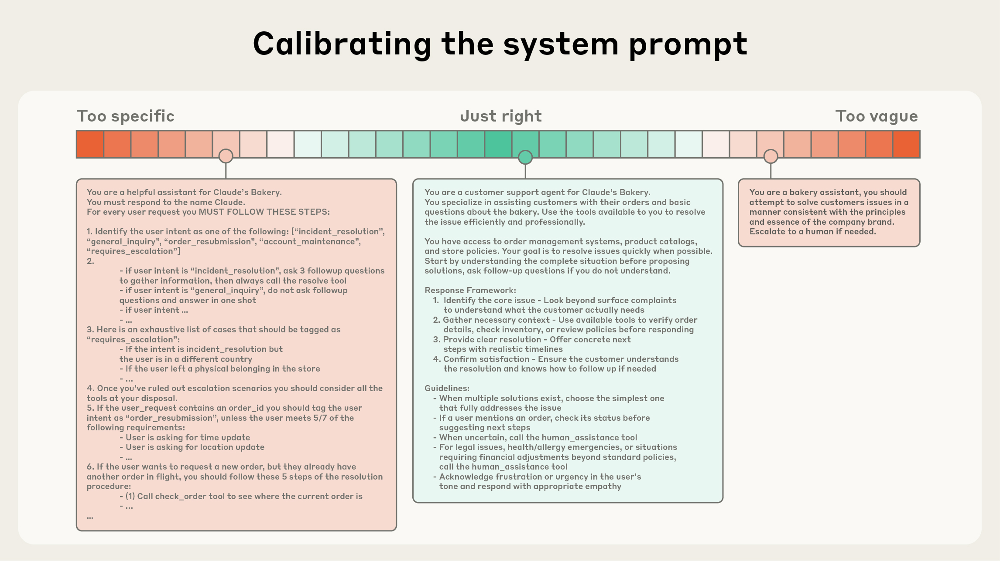
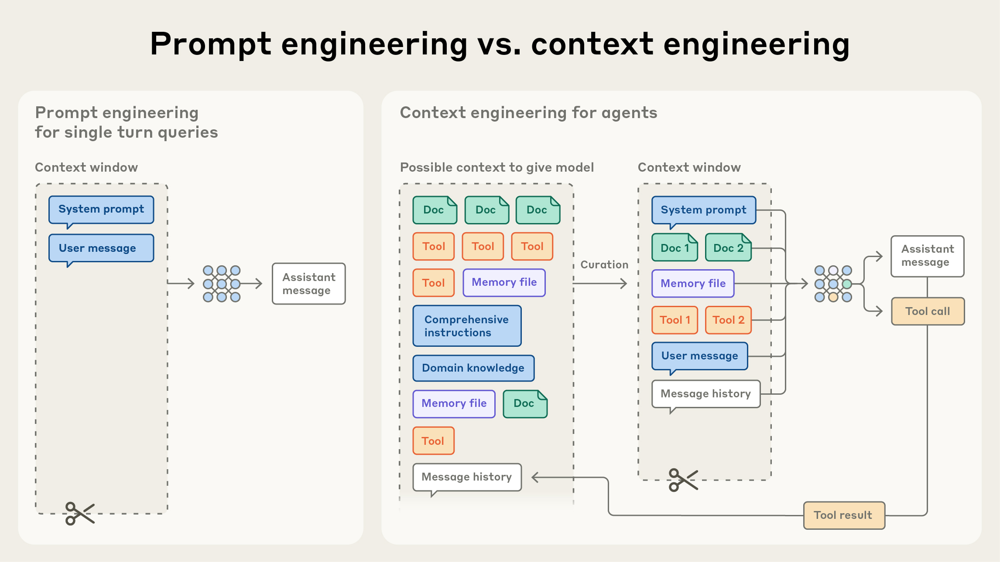

篇首导读
提示工程关心“这句话怎么写”；上下文工程关心“模型这一步到底能看到什么”。这篇文章把后者拆成一套可操作的原则：上下文是有限资源，token 越多，模型对其中信息的召回越差（context rot）；因此目标不是把窗口塞满，而是找到最小的高信号 token 集合。
文章前半部分讲静态上下文的设计——系统提示要处在“正确的高度”，工具要少而清晰，示例要少而典型；后半部分讲运行时上下文——按需检索（just-in-time）、渐进式披露，以及长时程任务的三件套：压缩（compaction）、结构化笔记、子智能体架构。这三件套在今天的 Claude Code 等智能体里已经是标配。
怎么读：把它当作 Week 2 的“工程侧总结”。读完 Transformer 论文你知道窗口为什么贵，读完这篇你知道窗口里该放什么、什么时候放、放不下时怎么办。重点看“最小高信号 token 集合”和长时程任务那一节。
术语卡
完整术语表 →- Context Engineering 上下文工程
- 在推理时精心挑选和维护进入上下文窗口的 token 集合，包括系统提示、工具定义、外部数据、消息历史等，以稳定得到期望行为。
- Context Rot 上下文腐化 / 上下文衰减
- 上下文窗口里的 token 越多，模型准确召回其中信息的能力越差。这不是某个模型的缺陷，而是普遍现象。
- Attention Budget 注意力预算
- 模型解析上下文时能分配的注意力是有限的。每引入一个新 token 都会消耗一部分预算，所以上下文要“省着用”。
- Just-in-time Context 按需上下文 / 即时检索
- 不在推理前把所有资料塞进窗口，而是保存文件路径、查询、链接等轻量标识，运行时再用工具按需加载。
- Progressive Disclosure 渐进式披露
- 让智能体通过探索逐步发现信息：文件大小暗示复杂度，命名暗示用途，时间戳暗示时效性；一层层构建理解，而不是一次看全。
- Compaction 压缩 / 压缩总结
- 当对话接近窗口上限时，把历史总结成高保真摘要，用新窗口继续。关键是保留架构决策、未解决的 bug、实现细节，丢掉冗余的工具输出。
- Structured Note-taking 结构化笔记 / 智能体记忆
- 让智能体把进度、依赖、决策写到窗口外的文件（如 NOTES.md、待办列表），需要时再读回来，形成持久记忆。
- Sub-agent Architecture 子智能体架构
- 主智能体负责规划和综合，子智能体在干净的上下文里做深度搜索或技术工作，只把压缩后的摘要（约 1–2k token）返回给主智能体。
上下文工程 vs 提示工程
提示工程成为应用 AI 的焦点几年之后，一个新词开始走到台前：上下文工程（context engineering）。用语言模型构建应用，越来越少地关乎“为提示找到正确的词句”，越来越多地关乎回答一个更宽的问题：什么样的上下文配置最可能让模型产生我们期望的行为？
上下文指的是从大语言模型（LLM）采样时包含的那组 token。工程问题就是：在 LLM 固有的约束下，优化这些 token 的效用，以稳定达到期望结果。有效地驾驭 LLM，往往需要在上下文层面思考：考虑模型在任一时刻可用的整体状态，以及这个状态可能引出哪些行为。
在 Anthropic，我们把上下文工程看作提示工程的自然演进。提示工程指的是编写和组织 LLM 指令以获得最佳结果的方法；上下文工程则指在 LLM 推理期间，策划和维护最优 token 集合（信息）的一整套策略，包括提示之外可能进入上下文的所有其他信息。
早期用 LLM 做工程时，提示是 AI 工程工作中最大的部分，因为日常聊天之外的大多数用例，都需要针对一次性分类或文本生成任务优化提示。顾名思义，提示工程的主要焦点是如何写出有效的提示，尤其是系统提示。但随着我们构建更强大的智能体——它们要在多轮推理、更长的时间跨度上运行——就需要管理整个上下文状态的策略：系统指令、工具、模型上下文协议（MCP）、外部数据、消息历史等。
一个在循环中运行的智能体会产生越来越多可能与下一轮推理相关的数据，这些信息必须被循环式地提炼。上下文工程就是一门艺术兼科学：从这个不断膨胀的可能信息宇宙中，挑选出要放进有限上下文窗口的内容。
查看本节英文原文（节选）
At Anthropic, we view context engineering as the natural progression of prompt engineering. Prompt engineering refers to methods for writing and organizing LLM instructions for optimal outcomes. Context engineering refers to the set of strategies for curating and maintaining the optimal set of tokens (information) during LLM inference, including all the other information that may land there outside of the prompts.
In the early days of engineering with LLMs, prompting was the biggest component of AI engineering work, as the majority of use cases outside of everyday chat interactions required prompts optimized for one-shot classification or text generation tasks. As the term implies, the primary focus of prompt engineering is how to write effective prompts, particularly system prompts. However, as we move towards engineering more capable agents that operate over multiple turns of inference and longer time horizons, we need strategies for managing the entire context state (system instructions, tools, Model Context Protocol (MCP), external data, message history, etc).
An agent running in a loop generates more and more data that could be relevant for the next turn of inference, and this information must be cyclically refined. Context engineering is the art and science of curating what will go into the limited context window from that constantly evolving universe of possible information.
为什么上下文工程对构建有能力的智能体很重要
尽管 LLM 速度很快，也能处理越来越大的数据量，但我们观察到：它们和人类一样，会在某个点失去焦点或陷入混乱。针对“大海捞针”式基准的研究揭示了上下文腐化（context rot）：随着上下文窗口中的 token 数增加，模型从该上下文中准确召回信息的能力下降。
有些模型的退化更平缓，但这个特性在所有模型上都会出现。因此，上下文必须被当作一种边际收益递减的有限资源。人类的 working memory 容量有限；LLM 也有一个“注意力预算”，在解析大量上下文时消耗。每引入一个新 token，都会消耗一部分预算，这就更需要仔细策划提供给 LLM 的 token。
这种注意力稀缺源于 LLM 的架构约束。LLM 基于 Transformer 架构，每个 token 都可以关注整个上下文中的其他所有 token，这产生了 n 个 token 的 n² 个两两关系。上下文越长，模型捕捉这些两两关系的能力就被拉得越薄，形成上下文大小与注意力焦点之间的天然张力。此外，模型的注意力模式是从训练数据分布中学到的，而训练数据中短序列通常比长序列更常见；这意味着模型对跨整个上下文的依赖经验更少，专门的参数也更少。
位置编码插值之类的技术可以让模型处理更长的序列，但会带来 token 位置理解上的退化。这些因素造成的是性能渐变，而不是断崖：模型在较长上下文中仍然很有能力，但相比短上下文，信息检索和长距离推理的精度可能下降。
这些现实意味着：要构建有能力的智能体，深思熟虑的上下文工程是必需的。
查看本节英文原文（节选）
Despite their speed and ability to manage larger and larger volumes of data, we’ve observed that LLMs, like humans, lose focus or experience confusion at a certain point. Studies on needle-in-a-haystack style benchmarking have uncovered the concept of context rot: as the number of tokens in the context window increases, the model’s ability to accurately recall information from that context decreases.
While some models exhibit more gentle degradation than others, this characteristic emerges across all models. Context, therefore, must be treated as a finite resource with diminishing marginal returns. Like humans, who have limited working memory capacity, LLMs have an “attention budget” that they draw on when parsing large volumes of context. Every new token introduced depletes this budget by some amount, increasing the need to carefully curate the tokens available to the LLM.
This attention scarcity stems from architectural constraints of LLMs. LLMs are based on the transformer architecture, which enables every token to attend to every other token across the entire context. This results in n² pairwise relationships for n tokens. As its context length increases, a model's ability to capture these pairwise relationships gets stretched thin, creating a natural tension between context size and attention focus.
These factors create a performance gradient rather than a hard cliff: models remain highly capable at longer contexts but may show reduced precision for information retrieval and long-range reasoning compared to their performance on shorter contexts.
有效上下文的解剖
既然 LLM 受有限的注意力预算约束，好的上下文工程就意味着：找到尽可能小的高信号 token 集合，最大化期望结果出现的概率。说起来容易做起来难。下面按上下文的各个组成部分，说明这条指导原则在实践中意味着什么。
系统提示
系统提示应该极其清晰，使用简单、直接的语言，把想法放在对智能体来说“正确的高度”。正确的高度是两种常见失败模式之间的金发姑娘区：一个极端是工程师把复杂、脆弱的逻辑硬编码进提示，以诱导精确的智能体行为，这会造成脆弱性，长期维护也越来越复杂；另一个极端是给出模糊、高层的指导，既没有给 LLM 具体信号，又错误地假设了共享上下文。最优的高度要平衡：足够具体，能有效引导行为；又足够灵活，给模型强有力的启发式。
我们建议把提示组织成清晰的区块（如 <background_information>、<instructions>、## Tool guidance、## Output description 等），用 XML 标签或 Markdown 标题分隔。不过，随着模型能力提升，提示的具体格式可能越来越不重要。
无论怎么组织系统提示，都应该追求完整描述期望行为的最小信息集。注意，“最小”不一定意味着“短”：你仍然需要在开头给智能体足够的信息，确保它遵循期望行为。最好的做法是：先用最好的模型测试一个最小提示，看它在任务上的表现，再根据初始测试中发现的失败模式，添加清晰的指令和示例。

工具
工具让智能体能够与环境交互，并在工作过程中拉取新的上下文。因为工具定义了智能体与信息/行动空间之间的契约，所以工具必须促进效率：既要返回 token 高效的信息，也要鼓励高效的智能体行为。
在《Writing tools for AI agents – with AI agents》一文中，我们讨论了如何构建 LLM 容易理解、功能重叠最少的工具。就像设计良好的代码库中的函数一样，工具应该自包含、对错误鲁棒、用途极其清晰。输入参数也应该有描述性、无歧义，并发挥模型的固有优势。
我们见到的最常见失败模式之一，是工具集臃肿：覆盖太多功能，或者导致“该用哪个工具”的决策点模糊。如果人类工程师都不能明确说出某个场景该用哪个工具，就不能指望 AI 智能体做得更好。后文会讨论：为智能体策划一个最小可用工具集，也有助于在长交互中更可靠地维护和裁剪上下文。
示例
提供示例，也就是 few-shot prompting，是众所周知的最佳实践，我们仍然强烈建议。但团队常常把一长串边缘情况塞进提示，试图穷举某个任务的所有规则。我们不推荐这样做。相反，我们建议精心策划一组多样、典型的示例，有效展示智能体的期望行为。对 LLM 来说，示例就是“一图胜千言”里的那张图。
对上下文的各个组成部分（系统提示、工具、示例、消息历史等），我们的总体指导是：深思熟虑，让上下文既有信息量，又保持紧凑。接下来看运行时如何动态检索上下文。
查看本节英文原文（节选）
Given that LLMs are constrained by a finite attention budget, good context engineering means finding the smallest possible set of high-signal tokens that maximize the likelihood of some desired outcome. Implementing this practice is much easier said than done, but in the following section, we outline what this guiding principle means in practice across the different components of context.
System prompts should be extremely clear and use simple, direct language that presents ideas at the right altitude for the agent. The right altitude is the Goldilocks zone between two common failure modes. At one extreme, we see engineers hardcoding complex, brittle logic in their prompts to elicit exact agentic behavior. At the other extreme, engineers sometimes provide vague, high-level guidance that fails to give the LLM concrete signals for desired outputs or falsely assumes shared context.
Tools allow agents to operate with their environment and pull in new, additional context as they work. Because tools define the contract between agents and their information/action space, it’s extremely important that tools promote efficiency, both by returning information that is token efficient and by encouraging efficient agent behaviors.
Providing examples, otherwise known as few-shot prompting, is a well known best practice that we continue to strongly advise. However, teams will often stuff a laundry list of edge cases into a prompt in an attempt to articulate every possible rule the LLM should follow for a particular task. We do not recommend this. Instead, we recommend working to curate a set of diverse, canonical examples that effectively portray the expected behavior of the agent.
上下文检索与智能体式搜索
在《Building effective AI agents》一文中，我们强调了基于 LLM 的工作流与智能体之间的区别。自那篇文章以来，我们逐渐倾向于一个简单的智能体定义：LLM 在循环中自主使用工具。
与客户合作时，我们看到这个领域正在向这个简单范式收敛。随着底层模型能力增强，智能体的自主程度可以扩展：更聪明的模型能让智能体独立导航微妙的问题空间，并从错误中恢复。
现在，工程师设计智能体上下文的方式正在转变。今天，许多 AI 原生应用采用某种形式的基于嵌入的推理前检索，为智能体提供重要上下文。随着领域转向更智能体的方法，我们越来越多地看到团队用“即时（just in time）”上下文策略来增强这些检索系统。
“即时”方法不是预先处理所有相关数据，而是让智能体维护轻量标识（文件路径、存储的查询、网页链接等），并在运行时用这些引用通过工具动态加载数据。Anthropic 的智能体编程方案 Claude Code 就用这种方法在大型数据库上做复杂数据分析：模型可以写有针对性的查询、存储结果，并用 head、tail 等 Bash 命令分析大量数据，而无需把完整数据对象加载进上下文。这种方法模仿了人类认知：我们通常不会记住整个信息库，而是借助文件系统、收件箱、书签等外部组织和索引系统，按需检索相关信息。
除了存储效率，这些引用的元数据也提供了有效细化行为的机制，无论这些元数据是显式提供的还是直觉性的。对在文件系统中运行的智能体来说，tests 文件夹里名为 test_utils.py 的文件，含义就不同于 src/core_logic/ 里的同名文件。文件夹层级、命名约定、时间戳都提供了重要信号，帮助人类和智能体理解何时、如何使用信息。
让智能体自主导航和检索数据，还实现了渐进式披露：智能体通过探索逐步发现相关上下文。每次交互都会产生信息，影响下一步决策：文件大小暗示复杂度，命名约定暗示用途，时间戳可以代理相关性。智能体可以一层层构建理解，只在工作记忆里保留必要内容，并用笔记策略实现额外持久化。这种自我管理的上下文窗口，让智能体专注于相关子集，而不是淹没在详尽但可能无关的信息里。
当然，这里有取舍：运行时探索比检索预计算数据更慢。而且，需要经过深思熟虑的工程，才能确保 LLM 拥有正确的工具和启发式，有效导航其信息环境。没有适当指导，智能体可能误用工具、追逐死胡同、无法识别关键信息，从而浪费上下文。
在某些场景中，最有效的智能体可能采用混合策略：预先检索一些数据以换取速度，再自行决定是否进一步自主探索。“正确”的自主程度取决于任务。Claude Code 就是采用混合模式的智能体：CLAUDE.md 文件会在开头直接放进上下文，而 glob、grep 等原语让它能导航环境、按需检索文件，有效绕过陈旧索引和复杂语法树的问题。
对于内容动态性较低的场景，比如法律或金融工作，混合策略可能更合适。随着模型能力提升，智能体设计会趋向于让智能模型自主行动，人类策划越来越少。鉴于领域进步很快，“做能起作用的最简单的事”很可能仍然是团队在 Claude 上构建智能体时的最佳建议。
查看本节英文原文（节选）
Since we wrote that post, we’ve gravitated towards a simple definition for agents: LLMs autonomously using tools in a loop. Working alongside our customers, we’ve seen the field converging on this simple paradigm. As the underlying models become more capable, the level of autonomy of agents can scale: smarter models allow agents to independently navigate nuanced problem spaces and recover from errors.
Rather than pre-processing all relevant data up front, agents built with the “just in time” approach maintain lightweight identifiers (file paths, stored queries, web links, etc.) and use these references to dynamically load data into context at runtime using tools. This approach mirrors human cognition: we generally don’t memorize entire corpuses of information, but rather introduce external organization and indexing systems like file systems, inboxes, and bookmarks to retrieve relevant information on demand.
Letting agents navigate and retrieve data autonomously also enables progressive disclosure—in other words, allows agents to incrementally discover relevant context through exploration. Each interaction yields context that informs the next decision: file sizes suggest complexity; naming conventions hint at purpose; timestamps can be a proxy for relevance.
Of course, there's a trade-off: runtime exploration is slower than retrieving pre-computed data. Not only that, but opinionated and thoughtful engineering is required to ensure that an LLM has the right tools and heuristics for effectively navigating its information landscape. Without proper guidance, an agent can waste context by misusing tools, chasing dead-ends, or failing to identify key information.
长时程任务的上下文工程
长时程任务要求智能体在 token 数超过 LLM 上下文窗口的一系列行动中，保持连贯性、上下文和目标导向行为。对于持续数十分钟到数小时的任务，比如大型代码库迁移或综合研究项目，智能体需要专门的技术来绕过上下文窗口的大小限制。
等待更大的上下文窗口似乎是显而易见的策略。但在可预见的未来，所有大小的上下文窗口都可能受到上下文污染和信息相关性问题的影响——至少在我们希望智能体达到最强性能的场景中是如此。为了让智能体在长时间跨度上有效工作，我们开发了几种直接应对这些约束的技术：压缩、结构化笔记、多智能体架构。
压缩（compaction）
压缩是指：当对话接近上下文窗口上限时，总结其内容，并用摘要重新开始一个新的上下文窗口。压缩通常是上下文工程中提升长期连贯性的第一杠杆。其核心是以高保真方式提炼上下文窗口的内容，让智能体以最小的性能损失继续工作。
例如，在 Claude Code 中，我们把消息历史传给模型，让它总结并压缩最关键的信息。模型会保留架构决策、未解决的 bug、实现细节，丢弃冗余的工具输出或消息。然后，智能体可以用这个压缩后的上下文，加上最近访问的五个文件继续工作。用户获得了连续性，而不用担心上下文窗口限制。
压缩的艺术在于选择保留什么、丢弃什么：过度激进的压缩会丢失微妙但关键的上下文，其重要性可能后来才显现。对实现压缩系统的工程师，我们建议在复杂的智能体轨迹上仔细调优提示。先最大化召回，确保压缩提示捕捉到轨迹中每一条相关信息；再迭代提高精度，消除多余内容。
一个典型的“低垂果实”是清除工具调用和结果：工具在消息历史深处被调用后，智能体为什么还需要看原始结果？最安全、最轻量的压缩形式之一就是工具结果清除，最近已在 Claude Developer Platform 上作为功能推出。
结构化笔记（structured note-taking）
结构化笔记，也叫智能体记忆，是指智能体定期把笔记写到上下文窗口之外的持久记忆中，之后再把笔记拉回上下文。这种策略以最小开销提供持久记忆。就像 Claude Code 创建待办列表，或你的自定义智能体维护一个 NOTES.md 文件：这个简单模式让智能体在复杂任务中跟踪进度，保留关键上下文和依赖关系，否则这些信息会在几十次工具调用中丢失。
Claude 玩 Pokémon 展示了记忆如何在非编程领域改变智能体能力。智能体在数千个游戏步骤中保持精确统计——比如“过去 1,234 步我一直在 1 号道路训练宝可梦，皮卡丘已经升了 8 级，目标是 10 级”。没有任何关于记忆结构的提示，它自己发展出了已探索区域的地图，记住解锁了哪些关键成就，并维护战斗策略笔记，帮助它学习哪些攻击对不同对手最有效。
上下文重置后，智能体读取自己的笔记，继续数小时训练序列或地下城探索。这种跨摘要步骤的连贯性，使长时程策略成为可能；如果只把所有信息留在 LLM 的上下文窗口里，这是做不到的。
作为 Sonnet 4.5 发布的一部分，我们在 Claude Developer Platform 上公测了记忆工具，通过基于文件的系统，让智能体更容易在上下文窗口之外存储和查阅信息。这让智能体可以随着时间构建知识库、跨会话维护项目状态、引用之前的工作，而不必把所有东西都留在上下文里。
子智能体架构
子智能体架构提供了另一种绕过上下文限制的方法。与其让一个智能体在整个项目中维护状态，不如让专门的子智能体在干净的上下文窗口中处理聚焦的任务。主智能体协调高层计划，子智能体执行深度技术工作，或用工具查找相关信息。每个子智能体可能进行大量探索，使用数万甚至更多 token，但只返回压缩、提炼后的工作总结（通常 1,000–2,000 token）。
这种方法实现了清晰的关注点分离：详细的搜索上下文隔离在子智能体内部，主智能体专注于综合和分析结果。我们在《How we built our multi-agent research system》中讨论过这个模式，它在复杂研究任务上比单智能体系统有显著提升。
选择哪种方法取决于任务特征。例如：
- 压缩适合需要大量来回对话、保持对话流的任务；
- 笔记适合有清晰里程碑的迭代开发；
- 多智能体架构适合复杂研究和分析，并行探索能带来收益。
即使模型继续进步，在扩展交互中保持连贯性，仍将是构建更有效智能体的核心挑战。
查看本节英文原文（节选）
Long-horizon tasks require agents to maintain coherence, context, and goal-directed behavior over sequences of actions where the token count exceeds the LLM’s context window. For tasks that span tens of minutes to multiple hours of continuous work, like large codebase migrations or comprehensive research projects, agents require specialized techniques to work around the context window size limitation.
Compaction is the practice of taking a conversation nearing the context window limit, summarizing its contents, and reinitiating a new context window with the summary. Compaction typically serves as the first lever in context engineering to drive better long-term coherence. At its core, compaction distills the contents of a context window in a high-fidelity manner, enabling the agent to continue with minimal performance degradation.
Structured note-taking, or agentic memory, is a technique where the agent regularly writes notes persisted to memory outside of the context window. These notes get pulled back into the context window at later times. This strategy provides persistent memory with minimal overhead.
Sub-agent architectures provide another way around context limitations. Rather than one agent attempting to maintain state across an entire project, specialized sub-agents can handle focused tasks with clean context windows. The main agent coordinates with a high-level plan while subagents perform deep technical work or use tools to find relevant information. Each subagent might explore extensively, using tens of thousands of tokens or more, but returns only a condensed, distilled summary of its work (often 1,000-2,000 tokens).
结论
上下文工程代表了我们用 LLM 构建应用方式的根本转变。随着模型能力增强，挑战不只是写出完美提示，而是在每一步深思熟虑地策划哪些信息进入模型有限的注意力预算。无论你是在为长时程任务实现压缩、设计 token 高效的工具，还是让智能体按需探索环境，指导原则始终不变：找到最小的高信号 token 集合，最大化期望结果出现的概率。
我们概述的技术会随着模型进步继续演化。我们已经看到，更聪明的模型需要更少的规范性工程，允许智能体以更高自主性运行。但即使能力扩展，把上下文当作宝贵、有限的资源，仍将是构建可靠、有效智能体的核心。

查看本节英文原文
Context engineering represents a fundamental shift in how we build with LLMs. As models become more capable, the challenge isn't just crafting the perfect prompt—it's thoughtfully curating what information enters the model's limited attention budget at each step. Whether you're implementing compaction for long-horizon tasks, designing token-efficient tools, or enabling agents to explore their environment just-in-time, the guiding principle remains the same: find the smallest set of high-signal tokens that maximize the likelihood of your desired outcome.
The techniques we've outlined will continue evolving as models improve. We're already seeing that smarter models require less prescriptive engineering, allowing agents to operate with more autonomy. But even as capabilities scale, treating context as a precious, finite resource will remain central to building reliable, effective agents.
作者与致谢
本文由 Anthropic 应用 AI 团队撰写：Prithvi Rajasekaran、Ethan Dixon、Carly Ryan、Jeremy Hadfield，团队成员 Rafi Ayub、Hannah Moran、Cal Rueb、Connor Jennings 亦有贡献。特别感谢 Molly Vorwerck、Stuart Ritchie、Maggie Vo 的支持。
要点回顾
- 上下文工程 = 在推理时策划“模型能看到什么”，范围比提示工程更大：系统提示、工具、MCP、外部数据、消息历史都算。
- 上下文是有限资源：token 越多，召回越差（context rot）；目标是“最小的高信号 token 集合”，不是塞满窗口。
- 系统提示要处在“正确的高度”：既不硬编码脆弱逻辑，也不空泛到没有具体信号。
- 工具要少、清晰、自包含、token 高效；工具集臃肿会让“该用哪个”变成模糊决策点。
- 示例要多样、典型，不要试图穷举所有边缘情况。
- 运行时优先“按需检索”：保存路径/查询/链接等轻量标识，用工具动态加载；让智能体渐进式披露信息。
- 长时程任务三件套：压缩（compaction）、结构化笔记、子智能体架构；按任务特征选择。
- 即使模型变强，“把上下文当宝贵资源”这条原则不会过时。